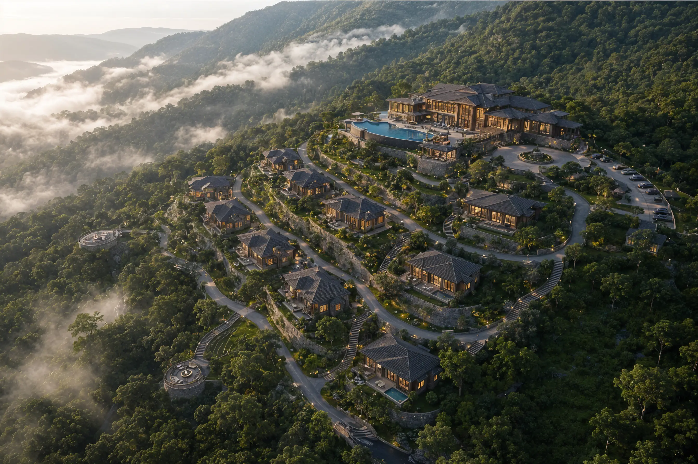

A hotel in the mountains is sold on one thing above all: the view from the room. Everything else in the design, from where the building sits to how it is built, either protects that view or spends it.
Building in the hills is also harder than building on the plains. The land slopes, the ground can move, roads are narrow, the working season is short, and the rules on height are strict for good reason. The best mountain hotels in India deal with all of this by working with the hillside rather than flattening it. The worst ones cut a platform, put up a block, and lose both the view and the character that made the site worth buying.
This guide explains how we approach mountain hotel architecture in India: reading the slope, placing buildings, materials and climate, safety and building rules, cost and construction. It draws on our work in the Himalayas, including The Oakridge, a mountain retreat in Chamba, and a concept master plan for an 11-acre hill resort community in Mukteshwar.
Start With the Slope
On a hill site, the slope decides almost everything: where buildings can go, how roads reach them, how water drains, and which rooms get the view. So before anything is drawn, the site needs a proper survey and a slope analysis, mapping how steep each part of the land is and which way it faces.
At The Oakridge in Chamba, the slope analysis came first and set the building's footprint and orientation. The house follows the natural fall of the land. At Mukteshwar, the same analysis of the ridge decided where each of the villas could sit without disturbing the natural gradient.
What the slope analysis tells you
- Where you can build. Gentler parts of the site suit buildings and parking. Steeper parts may be better left as landscape, gardens or viewpoints.
- Where the views are. Which way each part of the slope faces, and what it looks at: a valley, a peak, a river, or the hillside opposite.
- Where water goes. Rain on a slope follows natural channels. Building across them is one of the most common causes of damage in the hills.
- Where the sun falls. In cold climates, south-facing slopes get far more winter sun. That affects comfort, heating costs and how the building feels in the off-season.

Placing the Buildings: Step, Split or Scatter
There are three main ways to fit a hotel onto a slope. Most good projects use a mix of them.
| Approach | How it works | Best suited to |
|---|---|---|
| Stepping down the slope | The building is broken into levels that follow the contour, each with its own terrace and view | Hotels with a single main building on a moderate slope |
| Split levels | Entry on the uphill side at road level, with floors stepping down the valley side | Sites where the road runs along the top of the plot |
| Scattered cottages or villas | Small buildings placed along the contour, linked by paths | Larger sites, luxury resorts and steeper or irregular land |
The scattered approach is the one we used at Mukteshwar. On an 11-acre ridge with 360° Himalayan views, villas are placed individually along the contour so that each one keeps its privacy and its own view corridor, while the resort clubhouse sits at the highest point of the site and works as the shared hospitality core. Breaking a hotel into smaller pieces also keeps each building closer to the scale of the hillside, so the whole project sits more lightly in the landscape.
Arrival and roads
On a hill, guests usually arrive from the road above or below. The arrival court, parking and service entry need the flattest, most accessible part of the site near the road, so that guests are not climbing long stairs with luggage and supply trucks are not winding through the property. Internal roads and paths should follow the contour at gentle gradients, with steps and ramps where the slope is steeper.

Designing Every Room Around the View
In the plains, a hotel room's view is a bonus. In the mountains, it is what the guest is paying for, and that changes how rooms are planned:
- Rooms face outward, corridors face the hill. Placing corridors and service on the uphill side means every room can face the valley.
- Balconies and bay windows. Deep balconies and bay windows let guests sit with the view, and give shade and shelter from rain. At The Oakridge, wide timber balconies and generous bay windows frame the peaks and valley below.
- Public spaces on the edge. Restaurants, terraces and lounges belong where the view is widest, as at Mukteshwar, where dining terraces sit on the cliff edge.
- No building in front of the view. Later additions, water tanks and parking structures should never block the views of rooms already built. The master plan has to protect view corridors for the long term.

Materials, Climate and a Sense of Place
Mountain climates in India range from the mild hills of the Western Ghats to the cold of Himachal and Uttarakhand. In the Himalayan states, the design has to deal with cold winters, heavy monsoon rain and sometimes snow. For hotels in the plains and on the coast, see our guide to climate-responsive hotel design.
Working with the climate
- Sloping roofs. Pitched roofs shed rain and snow, and are standard in Himalayan hill architecture. At The Oakridge, a steeply pitched roof gives the building its character as well as shelter.
- Winter sun. Larger glazing on the sunny side and smaller openings on the cold side keep rooms warmer and cut heating costs.
- Insulation and draught control. Well-insulated walls and roofs and good windows matter more in the hills than almost anywhere else in India.
- Covered connections. Covered walkways or verandahs between buildings keep guests out of rain and snow.
Building in the local language
The hotels guests remember feel as if they belong to their place. In the hills that usually means local stone and timber, sloping roofs, verandahs and regional craft. In Himachal, traditional Kath-kuni construction uses layers of timber and stone. Hill stations across the region also carry a colonial vocabulary of timber joinery, gabled roofs and verandahs. The Oakridge draws from that hill-station language, with warm timber joinery, pitched stone-tiled roofs, shaded verandahs and a white rendered facade, combined with modern planning inside.
Local materials also make practical sense. They suit the climate, can often be sourced nearby, and age well in mountain weather. Lighter construction with more timber can also help a building respond better in an earthquake, as a CEPT University study cited by Mongabay India notes.

Safety, Ground and Drainage
The Himalayas are young, steep and seismically active mountains. Joshimath, which saw serious land subsidence in 2022–23, lies in seismic Zone V, the highest risk category. Mountain hotels need to be designed for it.
- Geotechnical investigation. Soil and rock testing before design, so foundations suit the actual ground. Experts quoted by Mongabay point out that many hill-building problems come from construction without analysing the soil.
- Respecting natural drainage. Never building across the natural water channels of the slope, and designing proper surface and subsurface drainage around every building.
- Minimal cutting. Avoiding large cuts into the hillside to make flat platforms. Cutting rock and soil destabilises slopes and needs costly retaining walls.
- Seismic structural design. Structure designed for the seismic zone, with regular, well-connected forms and lighter construction where possible.
- Retaining and slope protection. Where cutting cannot be avoided, engineered retaining walls, planting and slope protection.
The same Mongabay report notes an IIT Roorkee study that found buildings in Mussoorie and Nainital built in breach of the bye-laws, some reaching about 20 metres in height. Many of the problems seen in hill towns come from exactly this kind of over-building.
Building Rules in the Hill States
Hill states control height, slope and density much more tightly than the plains, and the rules change often. Two examples show how much they vary:
- Uttarakhand. According to Mongabay India, the state's 2011 building bye-laws limit Mussoorie to three storeys above ground and about 11 metres in height, and Nainital to 7.5 metres.
- Himachal Pradesh. A 2024 amendment to the state's Town and Country Planning Rules, reported by The Tribune, proposed taller buildings on large plots, but only on land with a slope below 20 degrees in hilly areas, and with a geological investigation, soil testing and third-party structural vetting. Rules like this are often revised or challenged, so their current status must be checked.
On top of height limits, mountain sites often fall under eco-sensitive zones around forests and sanctuaries, river setbacks and state hill-development rules that restrict tree felling, slope cutting and density. Most resort sites also need a change of land use. Our guide to designing a resort in India covers the wider approvals path, and our Uttarakhand practice works with these rules on hill projects.
The practical takeaway: confirm the height, slope and zone rules for the exact site before buying land or fixing a room count. A tight height cap or a slope limit can change the project completely.
Cost, Season and Construction
Mountain hotels cost more and take longer to build than the same hotel on flat land. In our resort cost guide, building on a steep hill or remote site can add 20–40% over an easy flat plot, mainly because of foundations, retaining walls and logistics. On top of standard resort costs per key, the main extra items are:
- Foundations and retaining. Stepped foundations, retaining walls and slope protection.
- Access and logistics. Narrow roads limit truck size, so materials come in smaller loads, and some sites need a temporary access road.
- Short working season. Monsoon and winter cut the months when work can go ahead, which stretches the programme.
- Utilities. Water, power and sewage often have to be provided on site, with storage for winter and dry months.
Good design reduces these costs. Placing buildings on the gentler parts of the site, keeping cuts small, using local materials and repeating a few building types all save money. Phasing helps too: opening with the clubhouse and a first group of rooms or villas, then adding more as bookings grow.
Mistakes We See on Mountain Hotels
- Cutting a flat platform. Levelling the site for a plains-style block, at great cost and with drainage and stability problems that follow.
- Building to the limit and beyond. Pushing height and density past what the rules or the slope allow, and risking both safety and demolition orders.
- Blocking your own views. Adding buildings, tanks or parking in front of rooms that already sell on their view.
- Ignoring the off-season. Designing only for the summer peak, with rooms that are cold and expensive to heat in winter.
- Forgetting staff and supplies. No space for staff housing, stores or fuel, in places where staff cannot commute and supplies arrive irregularly.
- Copying a city hotel. Glass boxes and flat roofs that could be anywhere, in a setting where guests expect timber, stone and sloping roofs.
Checklist Before You Buy Hill Land for a Hotel
Hill land often looks perfect on a clear day and turns out very differently on paper. These are the questions we ask on every mountain site before an owner commits:
- How steep is it, really? Get a contour survey. A site that looks gentle can have long stretches too steep to build on, which cuts the usable area sharply.
- Can a truck reach it? Check the width and condition of the access road in the monsoon as well as the dry season, and whether a construction vehicle can turn into the site.
- Which way does it face? A north-facing slope can be cold and shaded for much of the winter. A south-facing one gets the winter sun.
- What does it look at, and will that last? A view across an empty valley is only valuable if nothing can be built in front of it. Check what the land below you is zoned for.
- Where does the water go? Look for natural channels, signs of past slips, loose soil or springs. A geotechnical engineer can confirm what the surface suggests.
- Is there water and power? Ask about the reliability of supply through the year, and whether you would need storage, a borewell or a backup generator.
- Which rules apply? Height and storey limits for the town, slope limits, distance from rivers and forests, eco-sensitive zones, and whether the land needs a change of land use.
- Can staff live nearby? In remote hills, staff housing on or near the site is often essential for a hotel to run through the year.
An architect can answer most of these in a short site visit and desk study. That is far cheaper than discovering the answers after the land is bought.
Our Work in the Hills
The Oakridge, Chamba (Himachal Pradesh)
A luxury mountain retreat with panoramic Himalayan views. A slope analysis set the footprint and orientation before design began, so the two-storey building follows the slope. Its colonial hill-station language of timber joinery, pitched stone-tiled roofs, shaded verandahs and bay windows frames the peaks and the valley below. See The Oakridge.
Mukteshwar hill resort community (concept, Uttarakhand)
An 11-acre ridge in the Kumaon hills with 360° Himalayan views, planned for 45 private villas, serviced studio residences and a resort clubhouse. Villas follow the contour to protect privacy and view corridors, with the clubhouse at the highest point. See the Mukteshwar project.

Frequently Asked Questions
How do you design a hotel on a hill slope?
Start with a survey and slope analysis, then place buildings on the gentler parts of the site, either stepping one building down the contour, using split levels from a road above, or scattering smaller cottages or villas along the slope. Keep corridors on the uphill side so rooms face the view, avoid large cuts into the hillside, respect natural drainage, and design the structure for the seismic zone.
How many storeys can a hotel have in the hills of India?
It depends on the state and the town. In Uttarakhand, Mongabay India reports that the 2011 bye-laws limit Mussoorie to three storeys above ground and about 11 metres, and Nainital to 7.5 metres. Himachal Pradesh has its own Town and Country Planning Rules, revised in 2024, with conditions on slope and soil testing. Rules change often, so confirm them with the local authority for your exact site.
Does building a hotel in the mountains cost more?
Yes. Steep or remote sites can add around 20–40% over an easy flat plot, mainly because of foundations, retaining walls, access and logistics. A short working season and on-site utilities add time and cost. Careful placement, small cuts, local materials and phasing help keep the extra down.
What materials are best for mountain hotels in India?
Local stone and timber suit most Himalayan sites. They handle the climate, can often be sourced nearby, and fit the regional character that guests expect. Lighter construction with more timber can also help seismic performance. Sloping roofs, good insulation and well-sealed windows are important everywhere in the hills.
What approvals does a hill hotel need?
Usually a change of land use, building plan approval and a fire NOC, plus compliance with state hill-development rules on height, slope and density. Sites near forests, sanctuaries or rivers may fall under eco-sensitive zone rules, and some states require geological investigation and soil testing before larger buildings are approved.
Let the Mountain Lead
A good mountain hotel looks as if the hillside gave it permission to be there. It follows the slope, gives every room the view, uses the materials of its place, stays within the limits the land and the rules set, and is built to stay standing. Those decisions are made early, in the survey, the slope analysis and the master plan.
If you have land in the hills and want to know what kind of hotel it can carry, talk to our studio, or see our resort and hotel work in Uttarakhand.